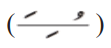
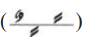
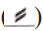
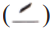

خَيْرُكُمْ مَنْ تَعَلَّمَ اْلقُرْآنَ وَعَلَّمَهُ
وَرَتِّلِ الْقُرْآنَ تَرْتِيلًا

Rules of Stopping
If any of these signs  or  appears on the end letter of the word and stop is required, then the last letter is read with Saakin.
If the last latter ends with Alif and letter before it has Fatha Tanween  or Fatha  or the last letter has Madd, then it will be pronounced as Fatha
For more detail see the following image
مـ – The Compulsory Stop
The sign of “Waqf e Laazim” bounds the reader to stop reading at this point, as the word laazim means imperative or to do at any cost. It is so because if one does not take a pause here, the entire meaning of the sentence will alter radically.
ط – The Absolute Pause
“Waqf e Mutlaq” is stop sign to indicate to the reader to take a gap in reciting the long passage by taking breath and discontinue the recitation for an instantaneous period of time. It is better to stop here because it makes the reading process easier by fully grabbing the meaning of already read text.
ج – The Permissible Stop
“Waqf e Jaaiz” points toward completion of matter discussed in that fragment of the Ayah, so one needs to stop here, although it is not obligatory to do so, so that it can absorb the meaning discussed in previous part, and get ready to know about new matter in the following part of same verse.
ز – Continue Reading
The sign of “Waqf e Mujawwaz” means one does not need to take a pause and continue the recital process, although there is no prohibition on stopping here.
ص – The Licensed Pause
“Waqf e Murakh-khas” is a symbol that permits the reader to take a break and take a breath in case if getting tired only, but it is highly advisable to carry on reading.
صلي– Preference for Continuation
“Al-wasl Awlaa” indicates towards continue recitation of the verses with no need to stop.
ق – Better not to Stop
“Qeela ‘Alayhil-Waqf” is a sign that shows not to stop recitation although there are differing opinions on whether to stop reading the verses or not.
صل – The Permissible Pause
“Qad Yusal” specifies about the permission of continue reading although one should stop here.
قف – The Anticipation Mark
“Qif” is inserted on the stop sign when a reader might expect the pause sign was not necessary.
س – The Silence Symbol
“Saktah” is a sign at which the reader should take a brief pause without breaking its breath before keeping on reading further.
وقفتہ – The Longer Pause
“Waqfah” indicates the longer pause than Saktah with the same gist of not breaking one`s breath while taking the break.
لا – No Need of Stopping
One should not discontinue reading the verses at this sign of “Laa” as it would change the meaning of Quranic lines altogether, yet one can stop when it is used at the end of the Ayah with Circle Mark of conclusion.
ك – Similar Meaning as Previous Sign
“Kadhaalik or “like that” applies the same connotation of action as suggested by the preceding symbol.
∴ – The Embracing Stop
“Mu’aanaqah” is a sign that signifies about stopping at either of the triplet included in it, with no discontinuation simultaneously.
وقف النبی – The Pause of Prophet PBUH
“Waqf-un-Nabi” shows the parts of Quran where the Messenger ﷺ of God Himself stopped and took pause.
وقف غفران – The Sign of Supplication
“Waqf e Ghufraan” is a symbol indicating a place where the recite and listener should stop to make a prayer in front of Allah SWT.
وقف منزل – The Pause Sign of Jibrael A.S
“Waqf e Manzil” is the sign indicating the Angel, Jibrael`s stopping and taking pause at the time of revealing the Quranic Instructions over the Holy Prophet ﷺ.